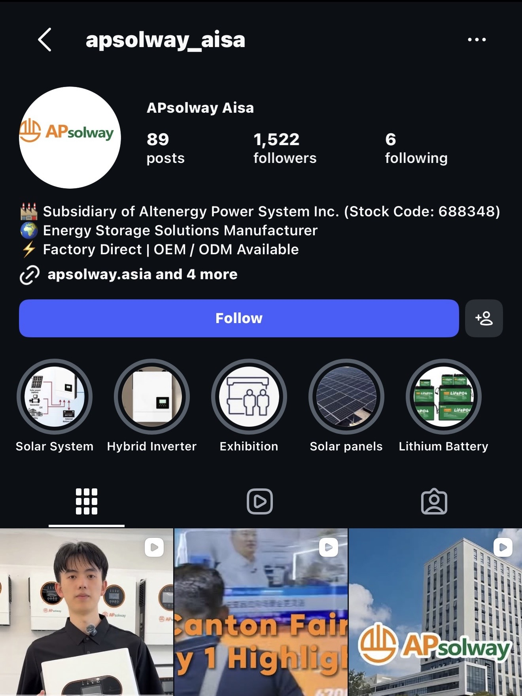
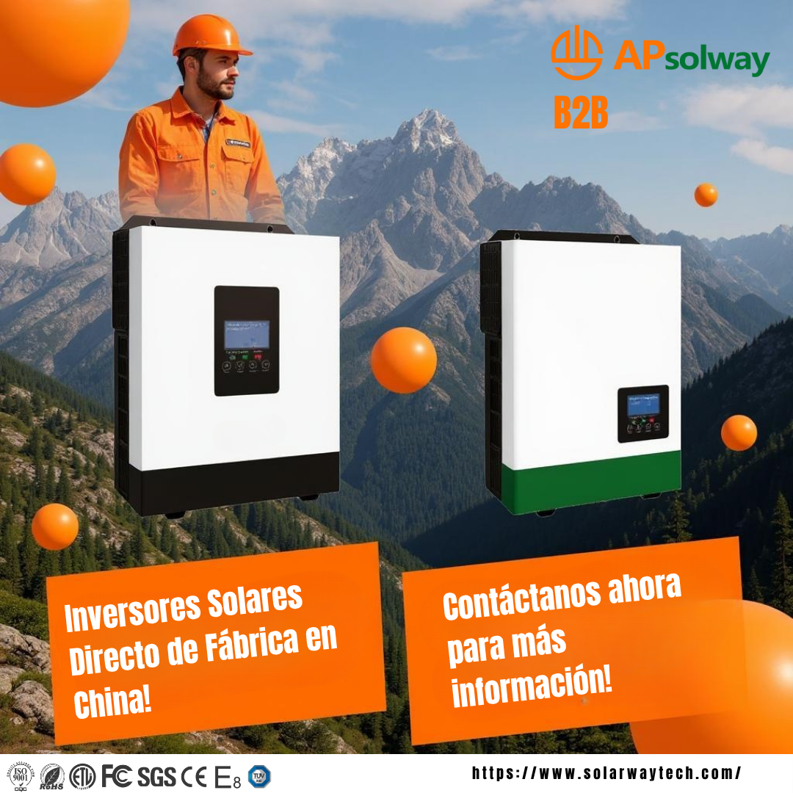
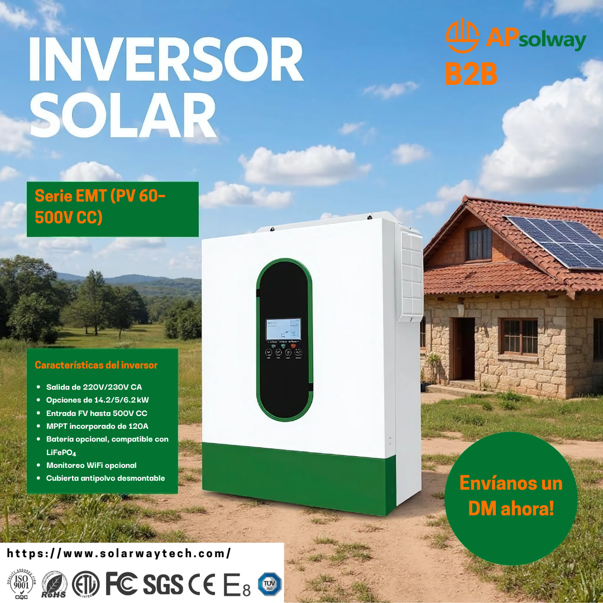

Previous approach
Regional allocation without consistent prioritization
Budget was distributed across regions without a shared framework for deciding which regions should receive more investment.
Two weeks · Approximately $2,000

APSolway is a global solar and energy storage technology company. I combined paid-media measurement and qualified-lead analysis to guide regional B2B acquisition budgets, and implemented separate AI-assisted workflows for prospecting and regional poster production.
01 / Acquisition analytics
Regional conditions and electricity-use patterns varied, and the team had limited local knowledge to prioritize every region confidently. I proposed performance-based tiers, assigning more budget to higher-priority regions and less to lower-priority regions, then updating their order as results came in.
Previous approach
Budget was distributed across regions without a shared framework for deciding which regions should receive more investment.
Two weeks · Approximately $2,000
Proposed approach
I ranked regional opportunity using acquisition performance and lead quality, then directed more budget toward higher-priority tiers.
Two weeks · Approximately $2,000
Qualified inquiry: a factory or business requesting pricing and showing bulk-purchase intent. Individual consumer requests did not qualify.
The weekly dashboard helped translate regional performance into the next allocation decision.
02 / Acquisition dashboard
Each week, the dashboard ranked regions by inquiry volume, qualified-inquiry rate, and conversion rate. I used those rankings to update the tier order and direct budget toward regions generating more qualified B2B demand.
Volume · Qualification · Conversion
Review inquiry volume by region.
Compare qualified-inquiry rate and conversion rate.
Update the regional tiers as results come in.
Direct budget toward regions generating more qualified B2B demand.
CAC and CPC helped evaluate acquisition cost; conversion and qualified-inquiry rate helped distinguish inexpensive clicks from useful business leads.
03 / AI campaign localization
The agent helped analyze and screen potential buyers sourced through Instagram and Facebook, and supported communication with relevant prospects. I kept qualification under my review, focusing on factories and businesses with bulk-purchase intent.
Analyze potential buyers sourced through Instagram and Facebook.
Focus on factories and businesses with bulk-purchase intent; individual consumers did not qualify.
Support communication with relevant prospective buyers.
Campaign execution required researching regional promotional styles, producing localized posters, and maintaining a consistent publishing cadence. I collected promotional examples used by factories in target regions and supplied regional reference images to the AI agent to generate localized solar-inverter poster concepts.
Collect promotional styles used by factories in target regions and supply reference images to the agent.
Generate 4–5 localized solar-inverter poster concepts per region in approximately 10 minutes, providing options to choose from.
Use regional concepts to support ongoing campaign publishing.
Here are examples of the Instagram prospecting context and two regional poster concepts:


